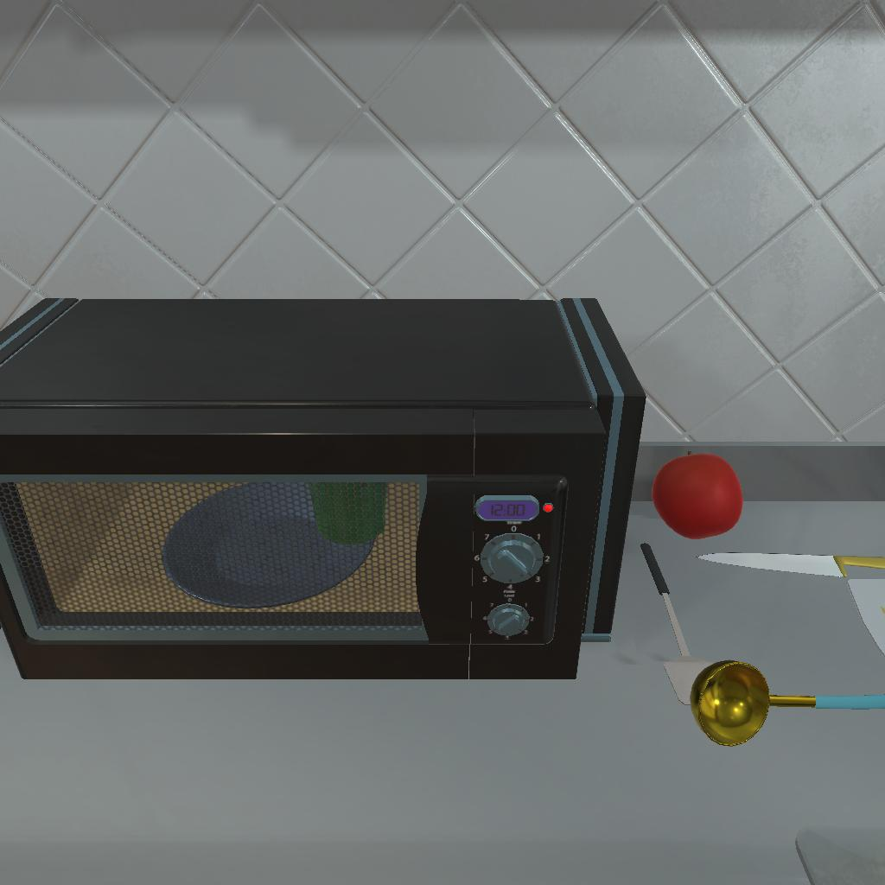

---------------------------------------------------------task: 12---------------------------------------------------------
--------------------------------------------------------------------------------------------------------------------------------------------------------------------
--------------------------------------------------------------------------------------------------------------------------------------------------------------------
Step:--------------------------------------------------------------------------12-------------------------------------------------------------------------------
----------------------------------------
VLM Prompt:
**Task**
Please perform as an embodied AI agent. Our final objective is to clean some tomato and put it in countertop. Below is the plan for completing the task, the current observation, alongside historical data and admissible actions for the next step. Please determine the best action for the next step!
**Plan**
Below is a detailed step-by-step plan to complete the task.
1. Find a tomato.
2. Pick up the tomato.
3. Find a sink or basin.
4. Clean the tomato with the sink or basin.
5. Find a countertop.
6. Place the cleaned tomato on the countertop.
**Current Observation**
Displayed is an image capturing the current position of the agent.
**History Information**
Displayed are the previous observations with their corresponding actions.
Current State 1:
1. Place: Kitchen (specific location not provided, but observation is of a sink)
2. Step Index in Plan: 1
3. Objects: Sink, Cabinets, Countertop, Fridge
4. Action: Go to fridge 1
Current State 2:
1. Place: In front of the fridge
2. Step Index in Plan: 2
3. Objects: Fridge, alphabet magnets, pictures
4. Action: Open fridge 1
Current State 3:
1. Place: Shelf
2. Step Index in Plan: Current step before taking the action
3. Objects: Tomato
4. Action: Take tomato 1 from shelf 1
Current State 4:
1. Place: Not specified (only mentions a shelf where a tomato was taken from)
2. Step Index in Plan: 3
3. Objects: Tomato, Potato
4. Action: Go to sinkbasin 1
Current State 5:
1. Place: Sink/Basin
2. Step Index in Plan: 4
3. Objects: Potato 1, Tomato (not present but required), Sink/Basin 1
4. Action: Put potato 1 in/on sinkbasin 1
Current State 6:
1. Place: Sink
2. Step Index in Plan: 4
3. Objects: Tomato, Potato, Faucet, Sink/Basin
4. Action: Take faucet 1 from sinkbasin 1
Current State 7:
1. Place: In front of the sink
2. Step Index in Plan: Step 4
3. Objects: Potato, Tomato, Sink, Faucet
4. Action: Go to sink 1
Current State 8:
1. Place: At the sink
2. Step Index in Plan: 4
3. Objects: Faucet, Sink/Basin, Tomato (not visible)
4. Action: Clean faucet 1 with sinkbasin 1
Current State 9:
1. Place: Sink/Basin
2. Step Index in Plan: 4
3. Objects: Potato, Tomato (missing)
4. Action: Go to countertop 1
Current State 10:
1. Place: Kitchen
2. Step Index in Plan: 4
3. Objects: Tomato
4. Action: Go to sink 1
Current State 11:
1. Place: In front of sink
2. Step Index in Plan: 4
3. Objects: Potato, Sink/Basin
4. Action: Go to sinkbasin 1
Current State 12:
1. Place: Sink
2. Step Index in Plan: 4
3. Objects: Potato, Tomato (not visible), Faucet
4. Action: Go to countertop 2
**Admissible Actions**
(1): go to cabinet 1
(2): go to cabinet 2
(3): go to cabinet 3
(4): go to microwave 1
(5): go to cabinet 4
(6): go to cabinet 5
(7): go to cabinet 6
(8): go to countertop 1
(9): go to coffeemachine 1
(10): go to toaster 1
(11): go to fridge 1
(12): put faucet 1 in/on countertop 2
(13): examine faucet 1
**Analysis Guideline**
1. Analyze the **History Information** and determine our current step in the plan and our current place.
2. List all visible objects related to the task in the current observation.
3. Analyze the objects in the current observation based on the history and the requirements for the current step, and then determine if we can complete the step with the current observation.
4. Analyze and decide on the most appropriate action to take.
5. Summarize the analysis using the following format: "Analysis: [The summarization of the analysis], The Most Appropriate Action: (i which is the integer.): [Selected action]"
**Notes**
1. We must complete each step of the plan in order and cannot skip steps when the previous ones are not finished.
2. For "Go to" actions listed as "go to xxx [n]", interpret this as there are n distinct actions available: "go to xxx 1", "go to xxx 2", ..., "go to xxx n". Select one specific action from these options instead of using "go to xxx [n]".
3. If receptacles such as drawers, cabinets, and so forth are closed in the current observation, we may try to open them.
4. Pay attention to synonyms and ensure clarity in the terms used.
5. If there is no history available, we are at the first step and the current place is "Unknown".
6. The most appropriate action must be in the **Admissible Actions**, and we cannot generate a new action that is not in the **Admissible Actions**.
**Answer**
Please select the most suitable action by following the **Analysis Guideline**, keeping the above **Notes** in mind.
----------------------------------------
----------------------------------------
VLM Response:
Analysis: Based on the History Information, our current step in the plan is to clean the tomato with the sink or basin, which is Step 4. The current place seems to be near the countertop with a microwave, knife, and a tomato visible in the observation. From the history, we know that the tomato has been previously taken from the fridge and is now supposed to be cleaned at the sink/basin. However, the current observation does not show the sink/basin, which is required for cleaning the tomato. Therefore, we cannot complete the current step with the current observation. Looking at the Admissible Actions, the most appropriate action to take us to the sink/basin is not listed. However, since we are in the kitchen and the tomato has been found but not yet cleaned, we should look for the sink/basin. The action to "go to countertop 1" seems to be the most closely related option that might bring the sink/basin into view or proximity, as countertops are usually near sinks in kitchen layouts.
The Most Appropriate Action: (8): go to countertop 1
----------------------------------------
----------------------------------------
>>> Refine VLM Response and Get Pure Action: go to countertop 1
----------------------------------------
-----------------------------------------------------------------
Running time: 14.901887893676758 seconds
Total Money: 5.7210199999999976
-----------------------------------------------------------------
-----------------------------------------------------------------
Summarization Prompt:
**Context**
Analysis: Based on the History Information, our current step in the plan is to clean the tomato with the sink or basin, which is Step 4. The current place seems to be near the countertop with a microwave, knife, and a tomato visible in the observation. From the history, we know that the tomato has been previously taken from the fridge and is now supposed to be cleaned at the sink/basin. However, the current observation does not show the sink/basin, which is required for cleaning the tomato. Therefore, we cannot complete the current step with the current observation. Looking at the Admissible Actions, the most appropriate action to take us to the sink/basin is not listed. However, since we are in the kitchen and the tomato has been found but not yet cleaned, we should look for the sink/basin. The action to "go to countertop 1" seems to be the most closely related option that might bring the sink/basin into view or proximity, as countertops are usually near sinks in kitchen layouts.
The Most Appropriate Action: (8): go to countertop 1
**Summary Format**
1. Place: [Specify the current location]
2. Step Index in Plan: [Dispkay the current step number in the plan before taking the current action]
3. Objects: [List the objects relevant to the task]
4. Action: [Describe the most appropriate action without the "(x)" and keep the integer of the object]
Please analyze the **Context** and summarize the analysis using the **Summary Format**.
-----------------------------------------------------------------
-----------------------------------------------------------------
Summarization Response:
1. Place: near the countertop with a microwave, knife, and a tomato
2. Step Index in Plan: 4
3. Objects: tomato, microwave, knife
4. Action: go to countertop 1
-----------------------------------------------------------------
-----------------------------------------------------------------
Text Observation:You arrive at loc 7. On the countertop 1, you see a bread 1, a cup 1, a pan 1, a potato 2, a ladle 1, a peppershaker 1, a apple 2, a dishsponge 1, a egg 1, a lightswitch 1, a fork 1, and a butterknife 1.
-----------------------------------------------------------------
UNSUCCEED